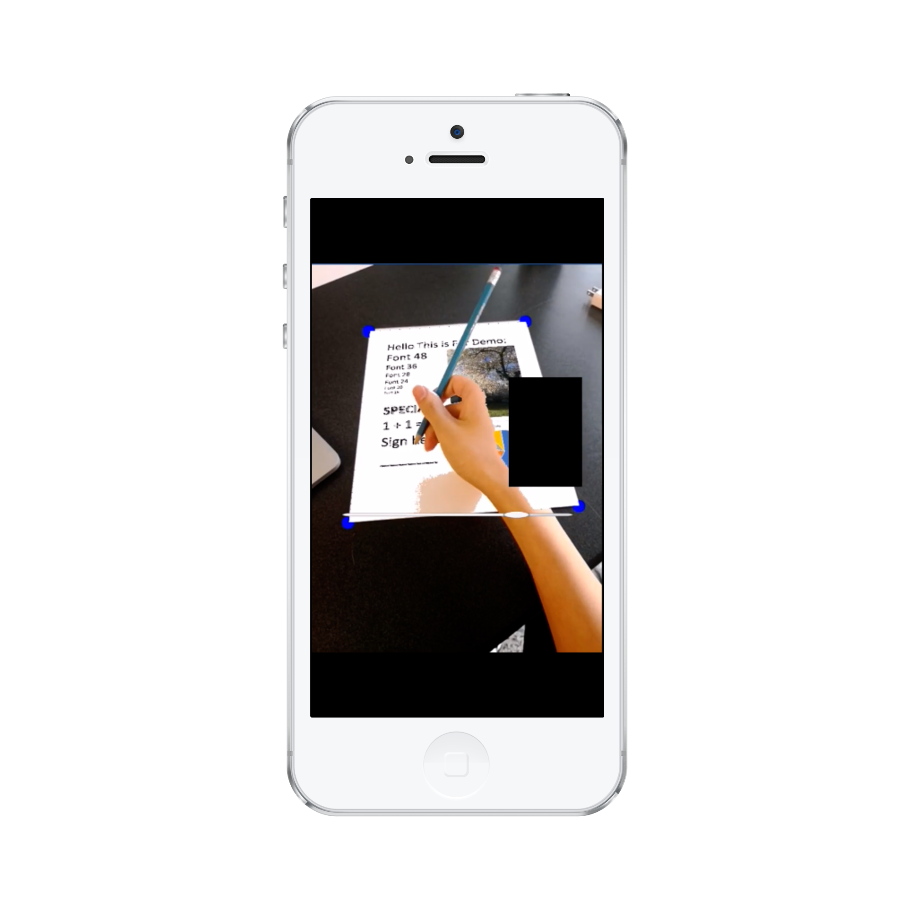
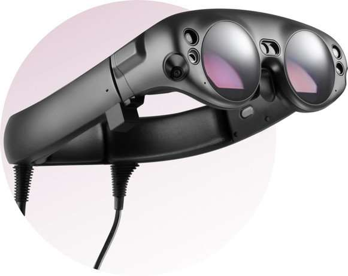
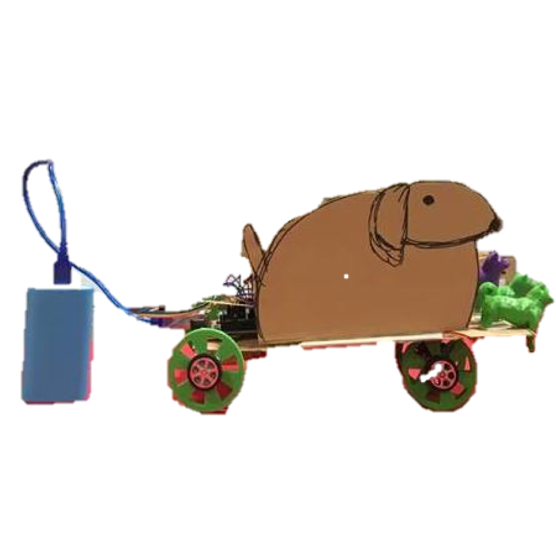

The best way to
predict the future is to
CREATE IT
I'm Eugene Jahn
a software developer
I am an undergraduate researcher at UW Reality Lab

PROJECTS
AR Note Taking

AR Garden
AirBnd Data Visualization

OLAMI
EZPen
Carrot Top